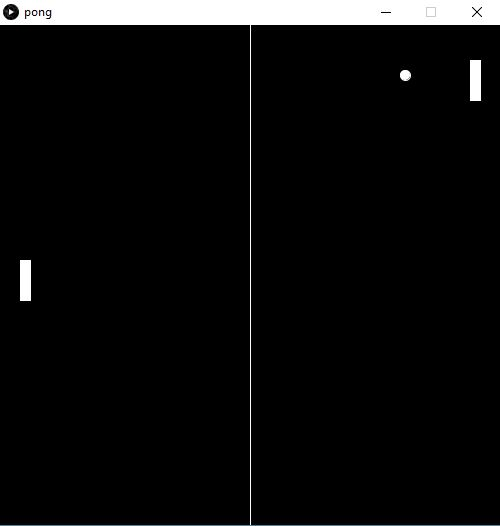

Programming
The programming unit covers the basics of programming in Java. The first part of the unit is taught with processing this is a program that allows users to code simple graphics onto an interface. Then from there its onto using an IDE (in this case eclipse) to write console applications, again in Java. The course covers many topics an overview of which is provided in the list below:
- Software Life Cycle and Design Methodology
- Verification and testing
- Application of standards and conventions
- Constructs and features of high level programming languages
- Abstraction
- Operators
- Use of Libraries
- Simple I/O
- Data Types
- Object orientated design